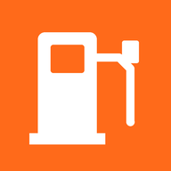

Tank klarPrivatliv
Sådan behandler Tank klar dine oplysninger. Senest opdateret november 2026.
- Ingen konto, ingen login og ingen reklamer.
- Ingen cookies og ingen sporing på tværs af hjemmesider.
- Det, du skriver i appen – tankdagbog, biler og indstillinger – gemmes kun på din egen telefon.
- Din position bruges kun, når du selv søger efter stationer, og den gemmes ikke.
Hvem står bag?
Tank klar er et gratis privat hobbyprojekt, lavet og drevet af [DIT NAVN]. Har du spørgsmål om dine oplysninger, kan du skrive til [DIN E-MAIL] eller bruge feedback-knappen i appen.
Det gemmes kun på din telefon
Appen gemmer følgende i din browser på din egen enhed. Det sendes ikke til os eller til nogen andre:
- Dine valg under Min bil: brændstof, tankstørrelse, batteri, lader, elområde og udseende.
- Din tankdagbog og dine biler: dato, liter eller kWh, pris, kilometertal og det beregnede beløb, du har sparet.
- Din faste station og hvilken fane, du sidst brugte.
Du kan slette det hele ved at trykke Nulstil log eller ved at rydde browserdata for tankklar.dk på din telefon. Bruger du appen på flere enheder, har hver enhed sine egne data.
Din position
Positionen bruges kun, når du trykker Find stationer nær mig eller slår automatisk søgning til. Du bliver spurgt om lov af telefonen først.
- Tankstationer: Appen henter én samlet liste over alle stationer og finder de nærmeste på din telefon. Din position sendes ikke nogen steder.
- Ladestandere: Her sendes positionen til OpenStreetMaps søgetjeneste (Overpass) på servere i Europa for at finde ladere i nærheden. Den gemmes ikke af appen.
- Søg fra postnummer eller by: Teksten, du skriver, sendes til OpenStreetMaps adressesøgning (Nominatim eller Photon) for at finde stedet.
- Vis vej åbner Google Maps med stationens adresse. Derefter gælder Googles egne regler.
Når du giver feedback
Trykker du Giv feedback, sendes din besked via tjenesten ntfy.sh til en notifikation på den ansvarliges telefon. Beskeden indeholder:
- Det, du selv skriver, og det humør, du vælger.
- Hvilke brændstoffer du har valgt, og om du bruger iPhone, Android eller computer, og om appen er installeret.
Der sendes ikke navn, e-mail eller position, medmindre du selv skriver det i beskeden. ntfy.sh gemmer beskeden i cirka 12 timer, og den slettes på modtagerens telefon, når den ikke længere skal bruges.
Hosting og statistik
Appen ligger hos Cloudflare, som leverer siden til din telefon. Som alle hjemmesider modtager Cloudflare teknisk information som IP-adresse og browsertype for at kunne levere siden og beskytte den mod angreb. Vi bruger Cloudflares statistik uden cookies, som kun viser samlede tal – for eksempel antal besøg og lande – og ikke kan bruges til at genkende dig.
Skrifttyperne ligger på tankklar.dk selv, så der sendes ingen oplysninger til Google, når du åbner appen.
Priser og andre data
Brændstofpriser kommer fra kædernes officielle prisdata og BenzinSignal, elpriser fra Energi Data Service (Energinet) og stationsplaceringer fra OpenStreetMap. Appen henter dem automatisk flere gange om dagen. Det sker på vores side og involverer ingen oplysninger om dig.
Prognosen for morgendagens pris er et vejledende bud og ingen garanti.
Dine rettigheder
Næsten alt ligger kun på din egen telefon, og det har du fuld kontrol over. Har du sendt feedback og vil have den slettet, eller har du spørgsmål, så kontakt os som beskrevet øverst. Du kan også klage til Datatilsynet.